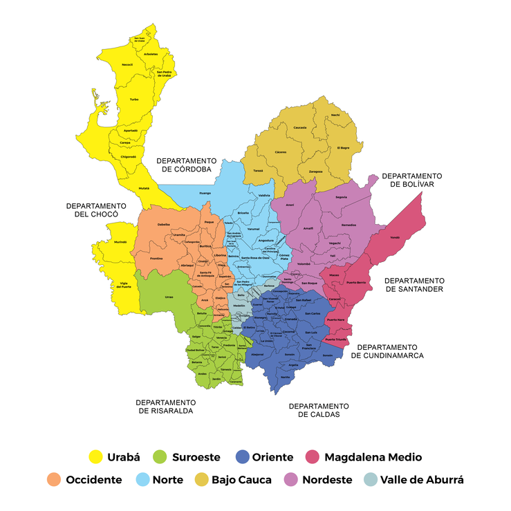
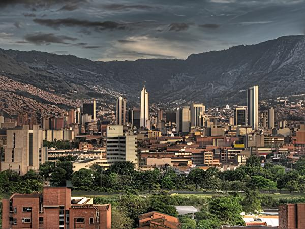
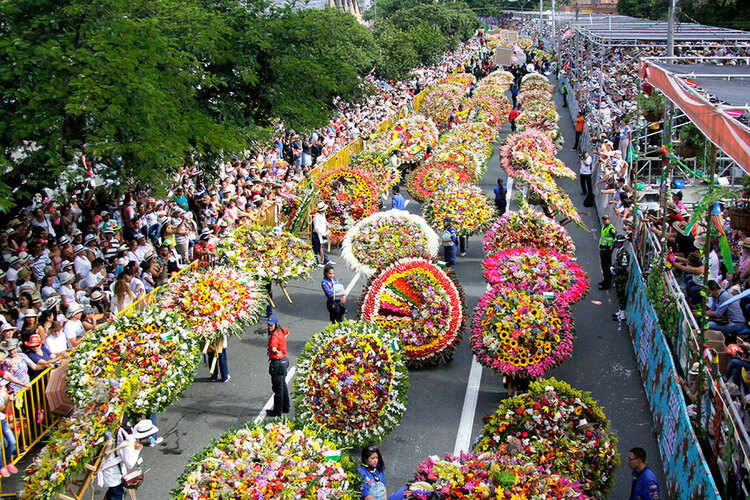
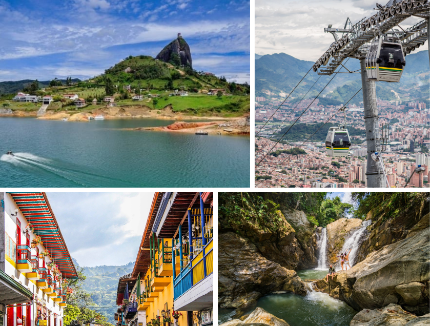

Antioquia es uno de los departamentos más importantes y representativos de Colombia, tanto por su tamaño como por su influencia económica, cultural e histórica. Con una superficie de aproximadamente 63,612 km², es uno de los departamentos más grandes del país y cuenta con una población de más de 6.5 millones de habitantes.
Su capital es Medellin, es la segunda ciudad más poblada de Colombia, con más de 2.5 millones de habitantes. Conocida como la "Ciudad de la Eterna Primavera" por su clima templado durante todo el año, Medellín se ha destacado por su transformación urbana y social en las últimas décadas.
un centro industrial, la ciudad ha evolucionado hacia un importante hub tecnológico, cultural y educativo. Medellín es famosa por su innovador sistema de transporte público, que incluye el Metro, los Metrocables y escaleras eléctricas en barrios populares. A nivel cultural, es conocida por eventos como la Feria de las Flores y el Festival Internacional de Poesía.
de montañas, Medellín ofrece una vibrante vida urbana con espacios verdes como el Jardín Botánico y el Parque Arví, combinando modernidad con tradición.


Antioquia tiene una rica historia que se remonta a la época precolombina, cuando era habitada por indígenas como los Catíos, Nutabes y Tahamíes. Durante la Conquista y Colonia, el departamento se consolidó como una región minera. En el siglo XIX, se caracterizó por ser una tierra de colonos que extendieron las fronteras del país hacia el sur y el occidente.
Culturalmente, los antioqueños, también conocidos como "paisas", son reconocidos por su espíritu emprendedor, hospitalidad y su característico acento. Antioquia ha sido cuna de grandes artistas y escritores como Fernando Botero y Tomás Carrasquilla. También es famoso por sus fiestas y tradiciones, como la Feria de las Flores en Medellín, una de las celebraciones más representativas del país.
El turismo en Antioquia es muy diverso, con actividades que van desde el turismo urbano en Medellín hasta el ecoturismo en las montañas y ríos de la región. Lugares como Guatapé y su famosa Piedra del Peñol, el Cañón del Río Claro, y los pueblos tradicionales como Santa Fe de Antioquia son destinos muy populares.
★Medellín ha ganado fama internacional por su transformación social y urbanística, con atracciones como el Metro, el Metrocable, y el Jardín Botánico.
★Pueblos patrimoniales: Antioquia cuenta con varios pueblos históricos como Jardín, Santa Fe de Antioquia y Jericó, que conservan la arquitectura colonial y ofrecen experiencias culturales únicas.
